TL;DR
Highlights
Method at a Glance
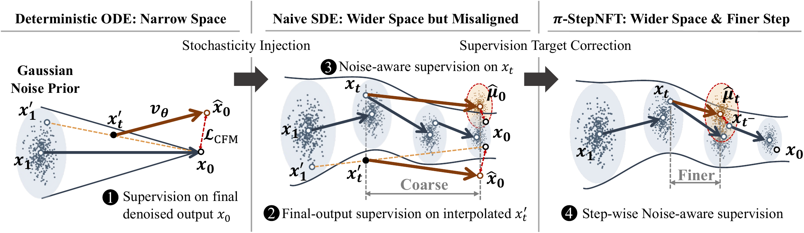
Why It Matters
Online reinforcement learning for flow-based VLAs must translate rollout feedback into updates along a multi-step denoising trajectory. Stochastic rollouts explore a wider transition space, but supervision reconstructed from the final output does not directly use the adjacent transitions observed during sampling.
π-StepNFT addresses this exploration–supervision mismatch by ranking variance-normalized errors on observed SDE transitions, connecting outcome feedback to local velocity updates.
Main Results
Updated 28 October 2026 to match the current manuscript revision. All results are success rates (%). π-StepNFT results are three-seed means; πRL baselines use the results reported by their original authors.
| Model | Spatial | Object | Goal | Long | Avg. | Δ Avg. (pp) |
|---|---|---|---|---|---|---|
| Full SFT | ||||||
| Octo | 78.9 | 85.7 | 84.6 | 51.1 | 75.1 | — |
| OpenVLA | 84.7 | 88.4 | 79.2 | 53.7 | 76.5 | — |
| πfast | 96.4 | 96.8 | 88.6 | 60.2 | 85.5 | — |
| OpenVLA-OFT | 91.6 | 95.3 | 90.6 | 86.5 | 91.0 | — |
| π0 | 96.8 | 98.8 | 95.8 | 85.2 | 94.2 | — |
| π0.5 | 98.8 | 98.2 | 98.0 | 92.4 | 96.9 | — |
| Few-shot SFT + RL (π0) | ||||||
| SFT | 65.3 | 64.4 | 49.8 | 51.2 | 57.6 | — |
| πRL (Flow-SDE + PPO) | 98.4 | 99.4 | 96.2 | 90.2 | 96.0 | +38.4 |
| πRL (Flow-SDE + GRPO) | 97.8 | 97.8 | 83.2 | 81.4 | 90.0 | +32.4 |
| π-StepNFT | 95.4 | 98.0 | 87.9 | 86.7 | 92.0 | +34.4 |
| π-StepNFT + Critic | 97.6 | 98.0 | 89.8 | 90.0 | 93.9 | +36.3 |
| Few-shot SFT + RL (π0.5) | ||||||
| SFT | 84.6 | 95.4 | 84.6 | 43.9 | 77.1 | — |
| πRL (Flow-SDE + PPO) | 99.6 | 100 | 98.8 | 93.0 | 97.9 | +20.8 |
| πRL (Flow-SDE + GRPO) | 97.4 | 99.8 | 91.2 | 77.6 | 91.5 | +14.4 |
| π-StepNFT | 97.8 | 100 | 98.2 | 79.8 | 94.0 | +16.9 |
| π-StepNFT + Critic | 98.0 | 99.3 | 98.2 | 88.4 | 96.0 | +18.9 |
| Model | IND | Visual (5) | Visual-language (6) | Semantic (2) | Execution (2) |
|---|---|---|---|---|---|
| π0 | |||||
| Full SFT | 38.4 | 33.7 | 33.1 | 6.4 | 13.3 |
| πRL (Flow-SDE + PPO) | 78.8 | 60.4 | 61.1 | 22.3 | 31.5 |
| πRL (Flow-Noise + PPO) | 77.8 | 64.4 | 64.7 | 20.7 | 24.2 |
| π-StepNFT | 73.6 | 66.5 | 65.8 | 21.8 | 29.7 |
| π0.5 | |||||
| Full SFT | 40.1 | 37.3 | 38.8 | 14.3 | 22.4 |
| πRL (Flow-SDE + PPO) | 90.9 | 66.2 | 68.0 | 33.1 | 45.4 |
| πRL (Flow-Noise + PPO) | 89.7 | 69.8 | 72.4 | 33.3 | 54.9 |
| π-StepNFT | 84.3 | 75.3 | 76.6 | 30.5 | 42.2 |
LIBERO: π-StepNFT raises average success from 57.6% to 92.0% for π0 (+34.4 pp) and from 77.1% to 94.0% for π0.5 (+16.9 pp). Critic-derived feedback further improves the averages to 93.9% and 96.0%, respectively. PPO retains the highest overall means.
ManiSkill visual shifts: π0.5-StepNFT reaches 75.3% across five test-only visual perturbations, compared with 66.2% for Flow-SDE and 69.8% for Flow-Noise. These are gains of 9.1 pp and 5.5 pp. Its robustness advantage is concentrated in visual appearance shifts; PPO baselines remain stronger in-distribution and on semantic and execution category averages.
Key Ablations
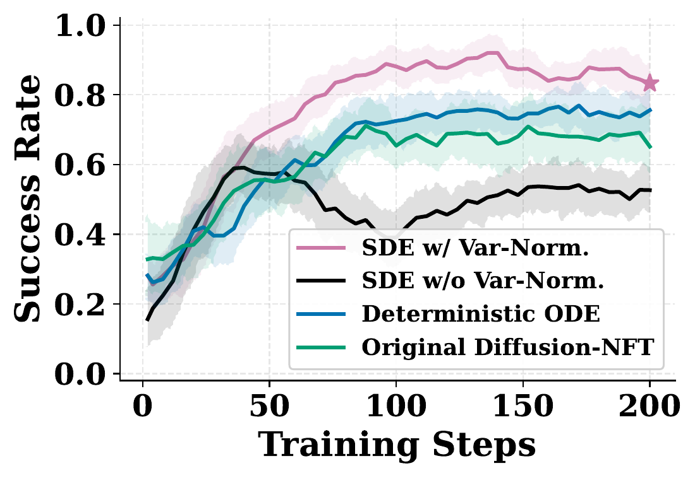
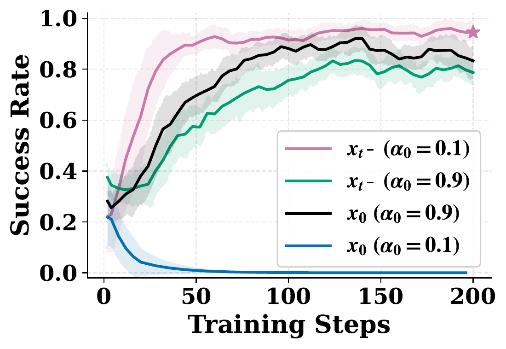
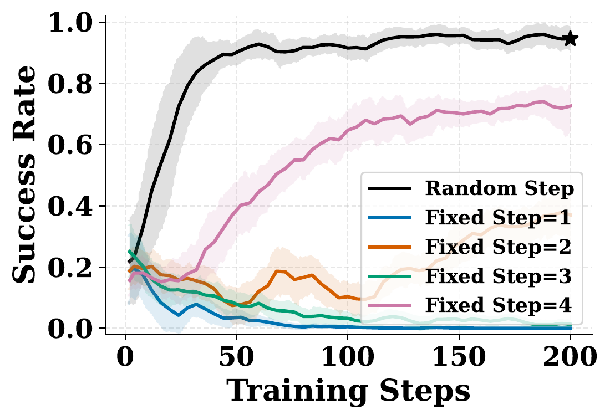
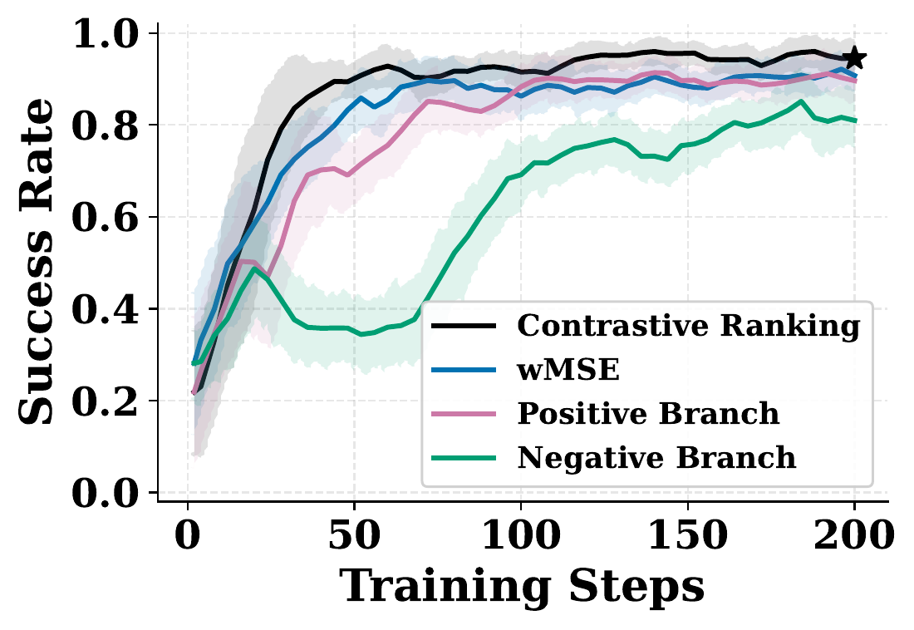
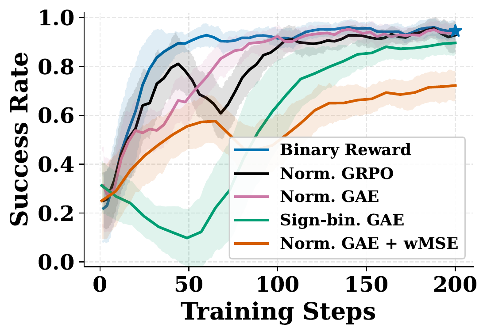
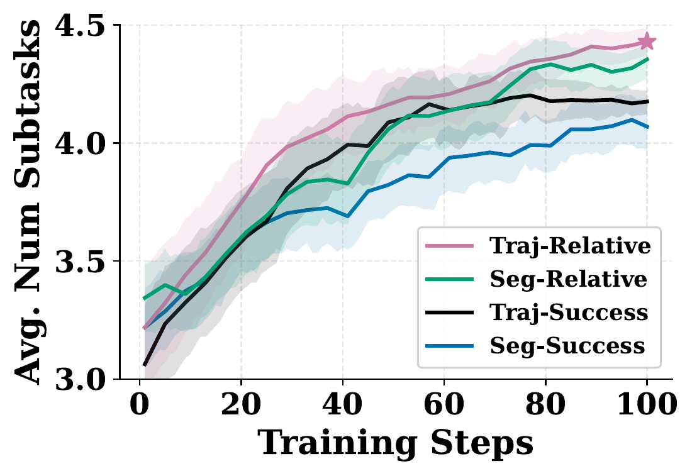
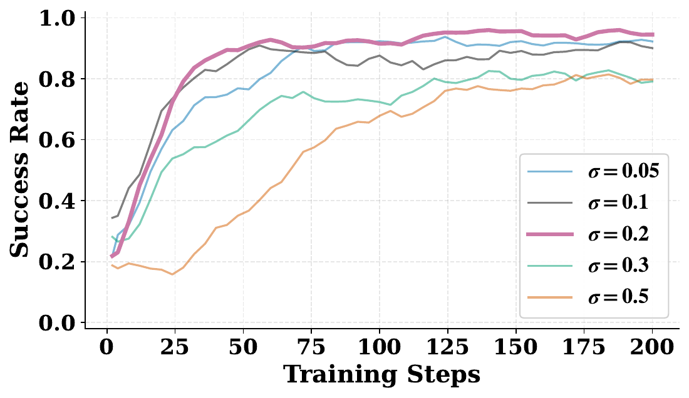
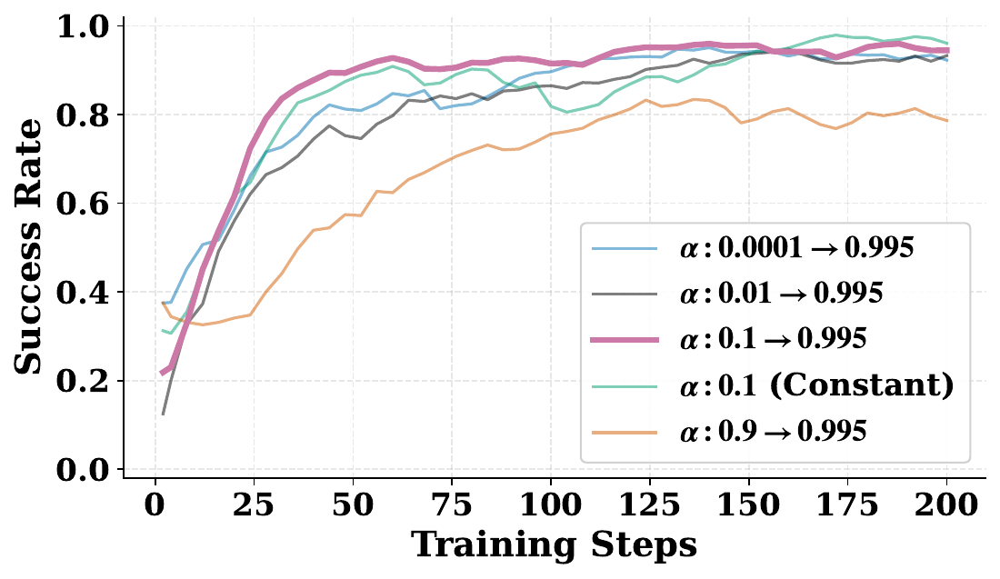
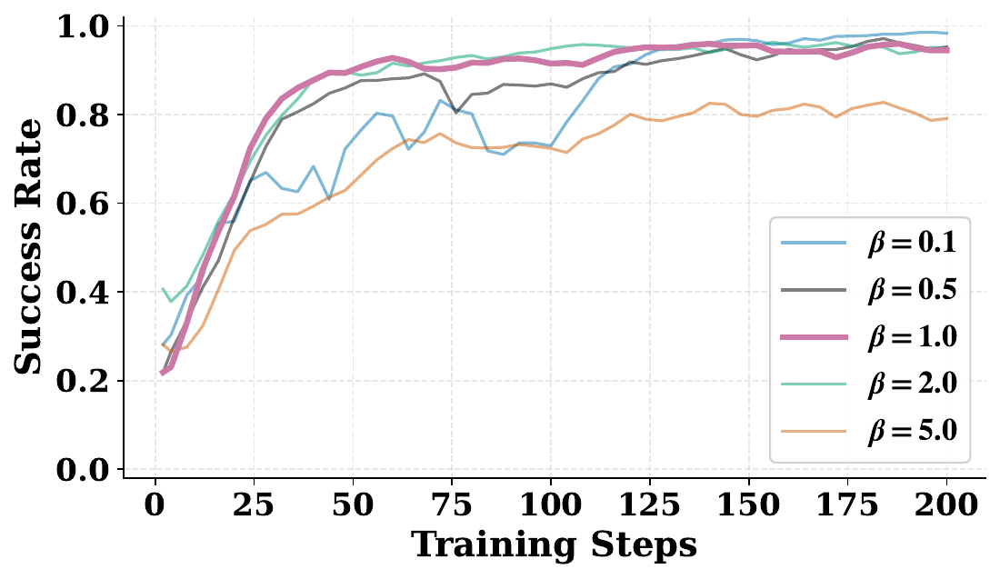
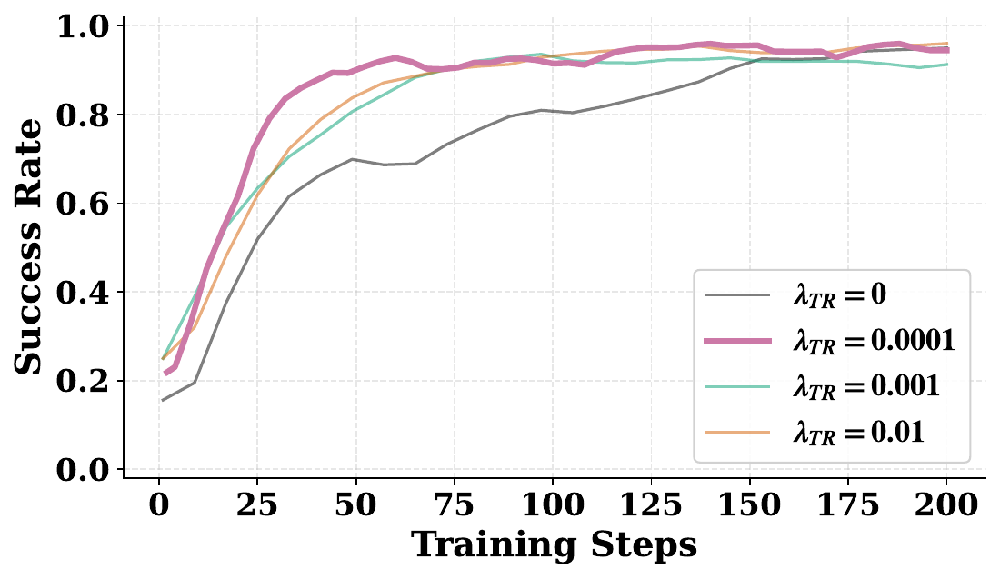
Excessive SDE noise impedes convergence, while insufficient noise limits local exploration. Dynamic EMA decay balances rollout-policy lag and update stability. Branch displacement scales β ∈ [1, 2] perform best, and a trust-region weight of λTR = 10−4 regularizes updates without slowing convergence.
Citation
@misc{wang2026pistepnftwiderspaceneeds,
title={$\pi$-StepNFT: Wider Space Needs Finer Steps in Online RL for Flow-based VLAs},
author={Siting Wang and Xiaofeng Wang and Zheng Zhu and Minnan Pei and Xinyu Cui and Cheng Deng and Jian Zhao and Guan Huang and Haifeng Zhang and Jun Wang},
year={2026},
eprint={2603.02083},
archivePrefix={arXiv},
primaryClass={cs.RO},
url={https://arxiv.org/abs/2603.02083},
}